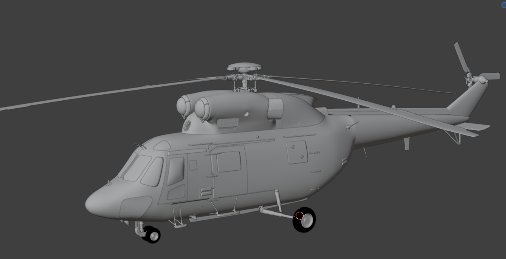

A detailed Polish military helicopter programme for Microsoft Flight Simulator 2024. Four distinct W-3 configurations, developed as real aircraft rather than cosmetic variants.

Every aircraft is being treated as its own machine — with its own cockpit, equipment, systems and mission workflow.
The baseline W-3 configuration and foundation of the family.
View details →Maritime search-and-rescue configuration built around the SAR mission.
View details →Modernised military configuration with a digital cockpit and mission systems.
View details →Modernised naval SAR configuration and the final member of the initial family plan.
View details →No fixed dates. Development stages may overlap and change as research, modelling and testing progress.
Build the reference library, establish the core W-3 geometry and create the development framework for the family.
Develop the first two aircraft with their own interiors, cockpits, systems, mission equipment and flight models.
Bring the aircraft to life through helicopter dynamics, engines, avionics, electrical systems, animations and MSFS 2024 integration.
The baseline W-3 and W-3RM form the first release package once they meet the project's quality standard.
Continue development using the established platform and knowledge, without treating the remaining variants as paid reskins.
The W-3PL Głuszec and W-3WARM Anakonda complete the four-aircraft family as a free expansion for existing users.
The W-3 is already being built in Blender, component by component. Current work includes the airframe, rotor head and landing gear, with the model being developed from reference rather than a generic helicopter visualisation.
See current development →MilPol Simulations is focused on Polish military aviation and the machines we actually want to learn and fly. The goal is detail with purpose: systems, procedures, handling and the character of the aircraft.